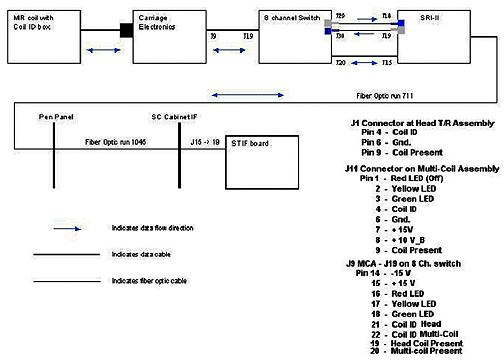

Operating Documentation
Direction 5133330-3, Rev# 14
Signa EXCITE HD 3.0T Service Methods
Module Version 1.0, Version Date 5/3/07
Operating Documentation |
Coil ID allows coils equipped with a Coil ID chip to be identified by the MR system. This is new with EXCITE2A. This chip is located in the coil quick-disconnect connector. All coils that interconnect with the upper quick-disconnect connector in the Low Profile Carriage must be Coil ID compatible. The system will not permit the customer to scan with coils that interconnect with this connector but are not equipped with the Coil ID chip. Special QD boxes equipped with Coil ID circuitry will be supplied for all older GE-supplied coils on site. These are supplied based on the pre-install checklist that was earlier completed and returned by the FE prior to the upgrade. These QD boxes are clearly marked as Coil ID compatible. A plan is currently in development to provide a solution for scanning with 3rd party coils that are not Coil ID compatible. Many coil vendors are now producing coils for the Signa 1.5T MR product that include the Coil ID chip.
Coil ID has also been implemented on certain newer phased array coils. The coil quick-disconnect connectors on these coils will be marked “Coil ID”. The MR system will expect to see a valid Coil ID code from these Coil ID compatible coils before it will permit the coil to be used during scanning.
It is important to understand that the MR system will still permit the customer to perform clinical scanning with receive-only phased array coils that are not Coil ID compatible. Service can still scan using coil interfaces that do not support Coil ID by entering “geservice” in the Patient ID entry box. Scanning using coils that are not Coil ID compatible will not be permitted unless “geservice” is entered in the Patient ID entry box. Coil ID cannot be disabled. See Illustration 1.
Illustration 1: How Coil ID Works

Coil ID and Coil Present pins exist in both the multicoil and head connections in the Low Profile Carriage Assembly or LPCA. The SRI2 detects a coil connection through the J20 to J15 link from the 8 Channel Switch by sensing a change in either the Head Coil Present or Multi-coil Present signal. When this happens it then queries the 8 Channel Switch through the J30 to J19 fiber optic link for the information from the Coil ID circuitry in the quick-disconnect box of the connected coil. The 8 Channel Switch, in turn, checks the Head TR and MC Assembly components for this Coil ID data. See the pin out information for the various connectors to the right of the drawing. The 8 Channel Switch makes this check through the J19 to J9 link. Coil ID data is returned to the SRI2 from the 8 Channel Switch through the J29 to J18 fiber optic link. The SRI2 receives information from the Host through the Run 711 and 1045 fiber optic links that is used to determine if the supplied Coil ID code matches that of any of the known coils. If a match is made then the SRI2 will command the LED in the LPCA to turn green through the J15 to J20 and J19 to J9 links. Clinical scanning will then be permitted as long as the Coil ID code of the attached coil matches that of a known coil and the Coil ID code of the attached coil matches that of the coil selected in the prescription. If the Coil ID code returned to the SRI2 cannot be matched to a known coil or no Coil ID code is returned then the SRI2 commands the LED in the LPCA to turn yellow through the J15 to J20 and J19 to J9 links. No clinical scanning is permitted. Service scanning using “geservice” is permitted. The Coil ID LED will be dark if the Coil Present signals on either quick-disconnect connector indicate to the MR System that no coils are connected or if a legacy receive-only phased array coil is connected to the lower quick-disconnect connector. The MR System will not permit the customer to perform a clinical scan if a valid Coil ID code is required for the coil selected in the prescription. It will, however, permit the customer to scan if a valid Coil ID code is not required for the coil selected in the prescription. A valid Coil ID code is not required for legacy receive-only phased array coils so the MR System, in this case, would permit the customer to perform clinical scans. Again, Service is permitted to scan without a valid Coil ID code as long as “geservice” is used for the Patient ID in the prescription.
As described earlier the Coil ID LED is always in 1 of 3 visual display states: green, yellow, or dark (off). The color red is not used. The Coil ID LED unit consists of a green and red LED combined together. The green and red LEDs are illuminated together to produce the color yellow (at some angles this sometimes looks orange) and the green LED is sometimes illuminated by itself to produce the color green but the red LED is never illuminated by itself. In summary, when the Coil ID LED is green then the MR System is indicating that a coil has been attached to one of two quick-disconnect connectors in the LPCA, the Coil ID code from the attached coil matches a known coil and, as a result, clinical scanning will be permitted. When the Coil ID LED is yellow then the MR System is indicating that a coil has been attached to one of two quick-disconnect connectors in the LPCA but either the Coil ID code hasn’t yet been detected or the Coil ID code has been detected but the system can’t match it to a known coil. When the Coil ID LED is yellow clinical scanning will not be permitted. When the Coil ID LED is dark then this indicates that the MR System has not detected that a coil is connected. Clinical scanning will not be permitted if a Coil ID code is required for the coil selected in the prescription but clinical scanning will be permitted if a Coil ID code is not required for the coil selected in the prescription.
Diagnostics for troubleshooting Coil ID problems are available under the SRI Functional Diagnostics on the MR system. Proprietary Help information for troubleshooting Coil ID problems is also provided under the Coil ID diagnostics on the MR system. The drawing shown in the slide was obtained from this proprietary Help information located on the MR system. More detailed interconnect information is also available in the Signa EXCITE Block Diagrams document.